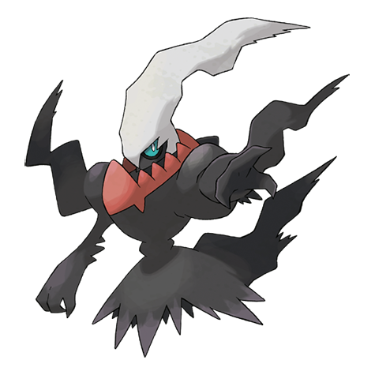
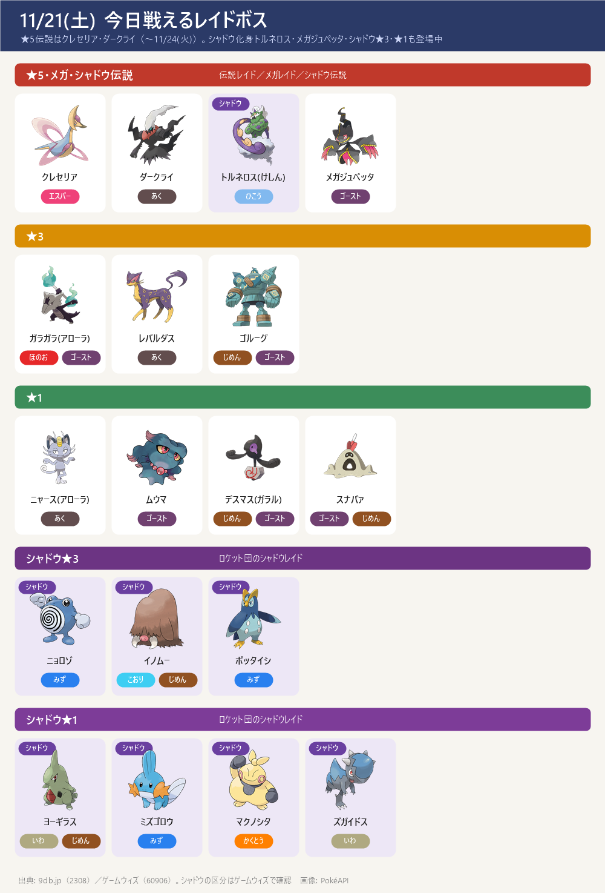
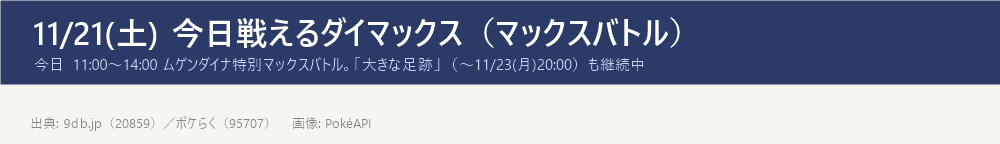
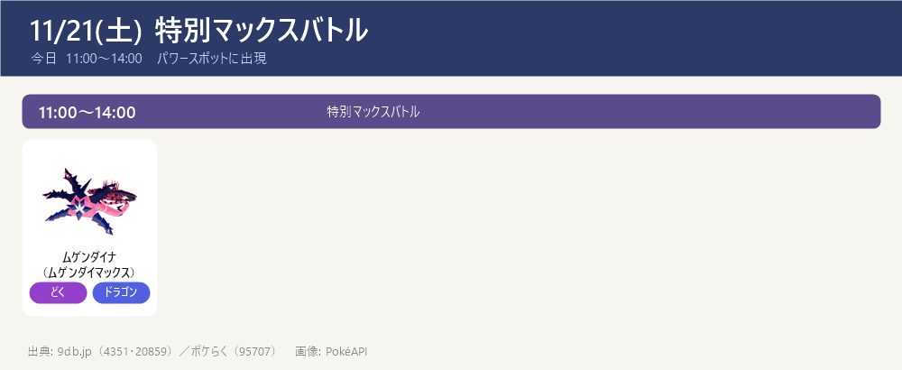
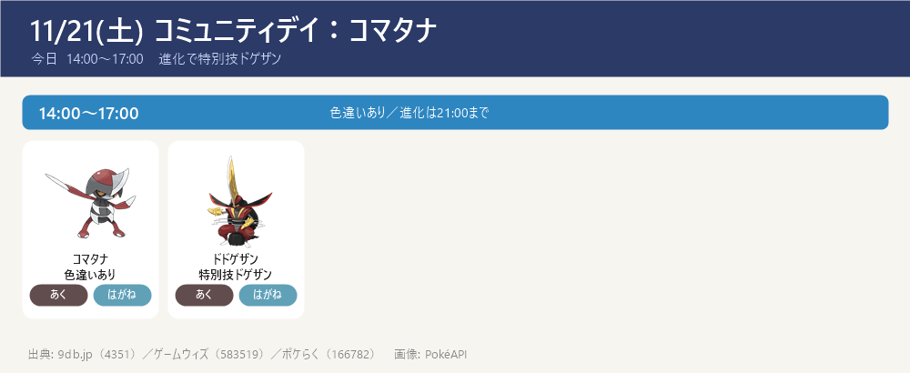

今日のポイント
- ★5伝説レイド：
 クレセリア・
クレセリア・
ダークライ（6:00〜〈9dbは5:00〉・〜11/24(火)）。クレセリア（エスパー）→ ゴースト・あく・むし技、ダークライ（あく）→ フェアリー・かくとう・むし技が有効。どちらも色違いあり。終了まであと数日なので捕り逃しに注意 - シャドウ化身
 トルネロス（シャドウ★5伝説、〜12/1(火)）と、シャドウ★3・★1レイド（
トルネロス（シャドウ★5伝説、〜12/1(火)）と、シャドウ★3・★1レイド（ ニョロゾ・
ニョロゾ・ イノムー・
イノムー・ ポッタイシ／
ポッタイシ／ ヨーギラス・
ヨーギラス・ ミズゴロウ・
ミズゴロウ・ マクノシタ・
マクノシタ・ ズガイドス）が登場中。
ズガイドス）が登場中。 メガジュペッタ（メガレイド、〜11/25(水)5:00）も継続
メガジュペッタ（メガレイド、〜11/25(水)5:00）も継続 - 今日 11:00〜14:00
 ムゲンダイナ（ムゲンダイマックス）特別マックスバトル。パワースポットに強力なムゲンダイナが登場します。マックス粒子（上限1,500）とマックスわざを育てた受け役をそろえて挑戦を。下にカードを載せています
ムゲンダイナ（ムゲンダイマックス）特別マックスバトル。パワースポットに強力なムゲンダイナが登場します。マックス粒子（上限1,500）とマックスわざを育てた受け役をそろえて挑戦を。下にカードを載せています - 今日 14:00〜17:00 コミュニティデイ：
 コマタナ。色違いコマタナが野生で出やすく、ルアーで大量発生（ルアー・交換ボーナスは21:00まで）。期間中に
コマタナ。色違いコマタナが野生で出やすく、ルアーで大量発生（ルアー・交換ボーナスは21:00まで）。期間中に ドドゲザンへ進化させると特別技「ドゲザン」（当日21:00まで習得可）。ボーナス：捕獲アメ2倍・交換のほしのすな半分・特別な交換1日2回・タマゴ孵化1/4・おこう3時間。進化条件：キリキザンを相棒にしてあく or はがねのレイドボスに1回勝利＋アメ100
ドドゲザンへ進化させると特別技「ドゲザン」（当日21:00まで習得可）。ボーナス：捕獲アメ2倍・交換のほしのすな半分・特別な交換1日2回・タマゴ孵化1/4・おこう3時間。進化条件：キリキザンを相棒にしてあく or はがねのレイドボスに1回勝利＋アメ100
今日戦えるレイドボス
★5伝説はクレセリア・ダークライ（〜11/24(火)）。シャドウ化身トルネロス・メガジュペッタ・シャドウ★3・★1も登場中

今日戦えるダイマックス（マックスバトル）
今日 11:00〜14:00 ムゲンダイナ特別マックスバトル。「大きな足跡」（〜11/23(月)20:00）も継続中
- ムゲンダイナ（ムゲンダイマックス）の特別マックスバトルは 今日 11:00〜14:00。パワースポットに出現します。カードは下の「特別マックスバトル」に載せています
- 「大きな足跡」では過去にマックスバトルへ登場した（準伝説・伝説を除く）ダイマックスが日替わり・場所ごとに登場します。固定ボスは各サイトとも発表しておらず予想のみのため、戦えるボスはゲーム内のパワースポットで確認してください
- 11/23(月)はマックスマンデーで、
 ニャスパーがダイマックス初登場（色違いの可能性あり）。「大きな足跡」の最終日でもあります
ニャスパーがダイマックス初登場（色違いの可能性あり）。「大きな足跡」の最終日でもあります

特別マックスバトル：ムゲンダイナ（ムゲンダイマックス）

- 今日 11:00〜14:00、パワースポットからムゲンダイマックスしたムゲンダイナが出現します。非常に強力なので、人を集めて挑むのが安心です
- マックスわざを覚えた受け役（かべ役）とアタッカーをそろえ、マックス粒子（上限1,500）を使って挑戦しましょう
コミュニティデイ：コマタナ

- 今日 14:00〜17:00。色違いコマタナが出やすく、ルアーで大量発生（ルアー・交換ボーナスは21:00まで）
- 期間中にキリキザン→ドドゲザンへ進化させると特別技「ドゲザン」を習得（当日21:00まで覚えられます）。進化条件：キリキザンを相棒にしてあく or はがねのレイドボスに1回勝利＋アメ100
サカキ対策（シャドウゼクロム）：攻略ページへ（別ページ）
締め切り・やること：まとめページへ（別ページ）
この先の予定（タップで開閉）
- 11/22(日) 23:59 ぎんのおうかんの使用期限（
 ザシアンの攻撃特訓に）
ザシアンの攻撃特訓に） - 11/23(月) マックスマンデー：ニャスパー（ダイマックス初登場）／「大きな足跡」20:00 終了
- 11/24(火) クレセリア・ダークライのレイド終了／夜は満月（
 ガチグマに進化可能）
ガチグマに進化可能） - 11/24(火) 10:00〜11/30(月) 20:00 新イベント「黄昏時の願い」
- 11/25(水) 5:00〜 伝説レイドに
 デオキシス（各フォルム）登場・18:00〜19:00 レイドアワー／メガジュペッタ終了
デオキシス（各フォルム）登場・18:00〜19:00 レイドアワー／メガジュペッタ終了 - 11/26(木) 18:00〜19:00 スポットライトアワー：
 オンバット（捕まえるとアメ2倍）
オンバット（捕まえるとアメ2倍） - 12/1(火) シャドウ化身トルネロス終了
サイトで違っていた点（タップで開閉）
- レイドの入れ替わり時刻: 5:00（9db）と 6:00（他サイト）で違い。ゲーム内で確認を
- クレセリア・ダークライのレイド終了: 「〜11/24(火)」と記載。終了時刻はゲーム内で確認を
- シャドウ★3・★1の区分: ゲームウィズは通常レイドとシャドウを分けて表示、9db は同じ表に混ぜて表示。両サイトで出現ポケモン自体は一致したため、区分はゲームウィズに合わせて記載
- マックスバトルの「大きな足跡」当日ボス: 過去ダイマックスが日替わり・場所ごとで固定ボスの発表なし → 当日ボスは載せず（ゲーム内のパワースポットで確認）。今日の確定ボスはムゲンダイナ特別マックスバトル（11:00〜14:00）
- 今日のイベント（ムゲンダイナ特別マックスバトル・コミュニティデイ コマタナ）は 9db 4351・攻略大百科 77843・ゲームウィズ・ポケらくで一致
出典: 9db.jp/pokemongo（開催イベント一覧4351・レイド日程2308・マックスバトル日程20859）／pokemongo.gamewith.jp（60906・583519）／pokemongo-raku.com（95707・166782）／pokemon.gamepedia.jp/go（攻略大百科 77843）／pvpoke.com ゲームデータ（技候補）
画像: PokéAPI ／ 2サイト以上で一致した情報だけを載せています